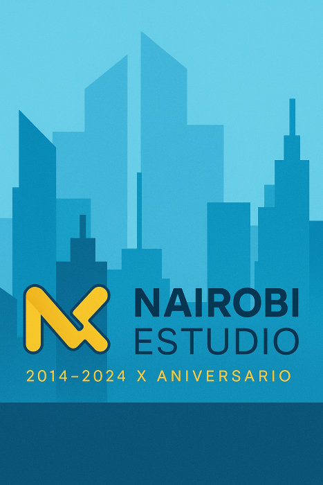
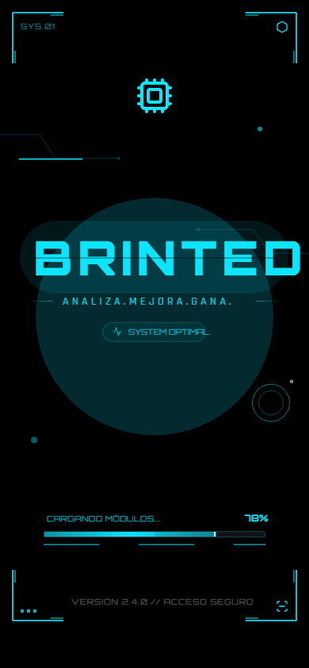

Desarrollo robusto
Aplicaciones Java con programación orientada a objetos, separación de responsabilidades y estructura clara.
Perfil técnico orientado al desarrollo backend, la gestión de datos relacionales y la construcción de aplicaciones claras, mantenibles y útiles.
Me gusta desarrollar software con una base sólida: código ordenado, modelos de datos bien pensados y soluciones que sean fáciles de mantener cuando el proyecto crece.
Trabajo especialmente con Java y bases de datos relacionales. También tengo experiencia práctica con desarrollo web, Kotlin, .NET, control de versiones y plataformas como ThingsBoard para proyectos orientados a IoT.
Aplicaciones Java con programación orientada a objetos, separación de responsabilidades y estructura clara.
Diseño relacional, consultas, procedimientos, funciones, triggers y trabajo con Oracle.
 Web & IA
Web & IA
Sitio web con frontend en JavaScript, panel de administración, contenido editable, testimonios, formulario de contacto y funciones API.

Java & OracleAplicación de escritorio en Java con login, gestión de empresas y operaciones de alta, modificación, eliminación y consulta conectadas a base de datos.

Android & ComposeAplicación Android en Kotlin con navegación, pantallas de autenticación, modelos de datos y conexión con servicios externos.
 TypeScript
TypeScript
Proyecto TypeScript con estructura web/mobile, componentes de interfaz y configuración Android mediante Capacitor.